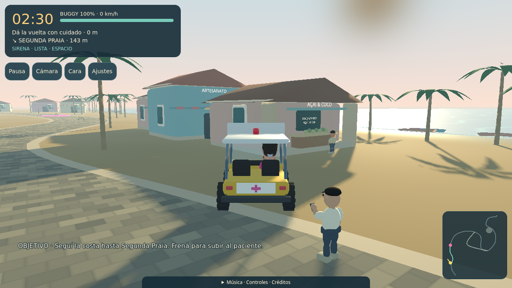
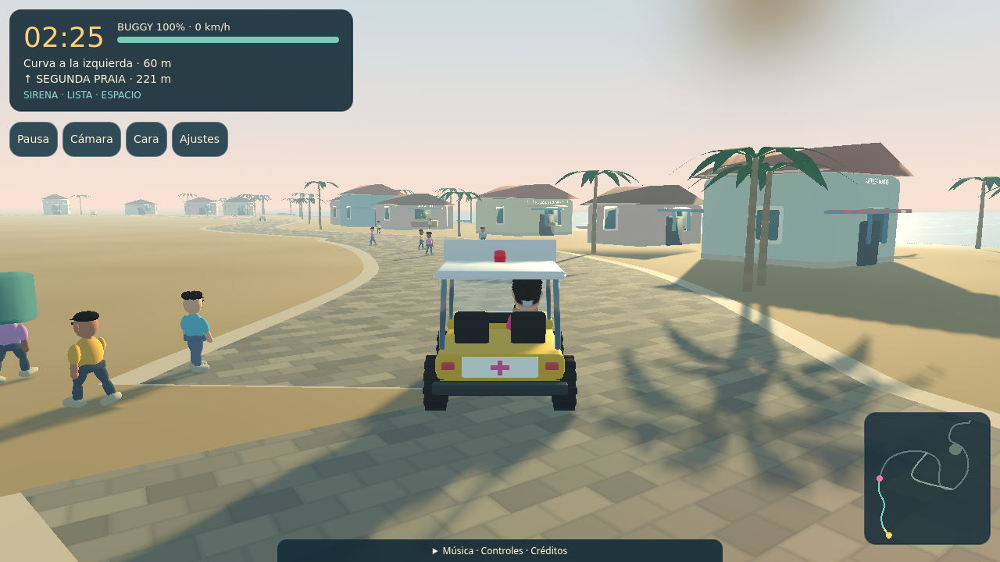
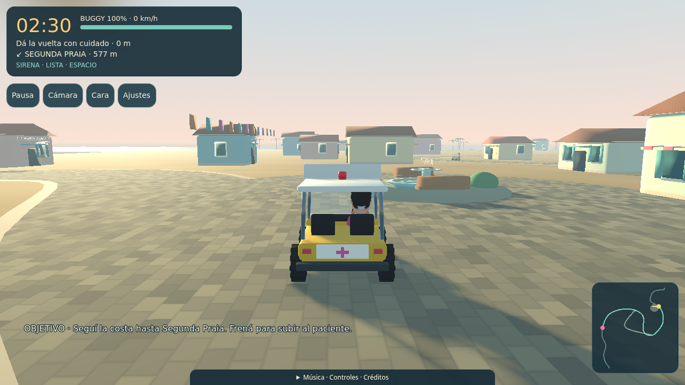
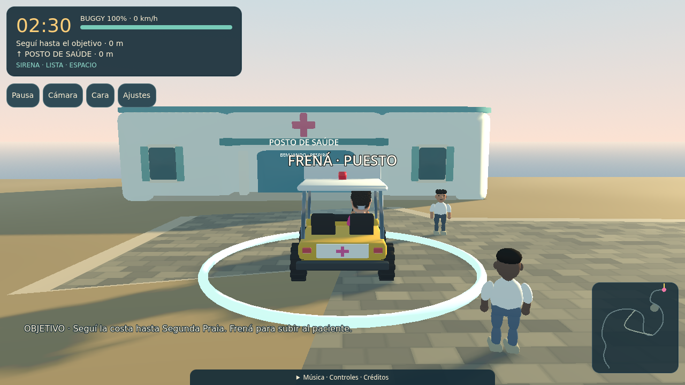

Disco y primera curva · Más detalle y vida
Tu indicación: «Añadir más detalle y vida antes de extender». Esta revisión concentra las escenas nuevas en la salida de la disco y el primer tramo costero. El parecido del protagonista conserva su aprobación anterior; la revisión de este escenario sigue abierta.
Peatones articulados de cuerpo completo, personal en la puerta, amigos con vasos, fotógrafo, carteles, banderines, aves costeras y puesto de coco abierto. Los 30 actores mantienen la misión de 150 segundos.
Probar localmente → · Jugar en Pages → · Protagonista aprobado
Misma posición, cámara de seguimiento, resolución 1280×720 y calidad Alta. Las posiciones de los personajes reflejan la nueva puesta en escena.

Mostrador abierto, cocos, menú y una figura junto al puesto.
Primer arranque real: marcha articulada y HUD compacto. Captura de diagnóstico por software; no certifica rendimiento físico.Ver la base del resto del recorrido
Estas zonas conservan su composición base; este pase de densidad y escenas se concentra en disco y primera curva.

Plaza.
Llegada al puesto.